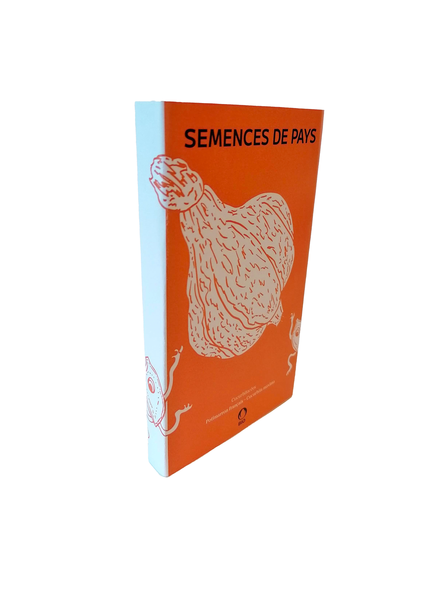
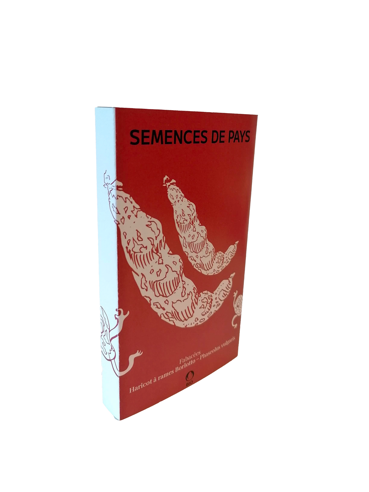
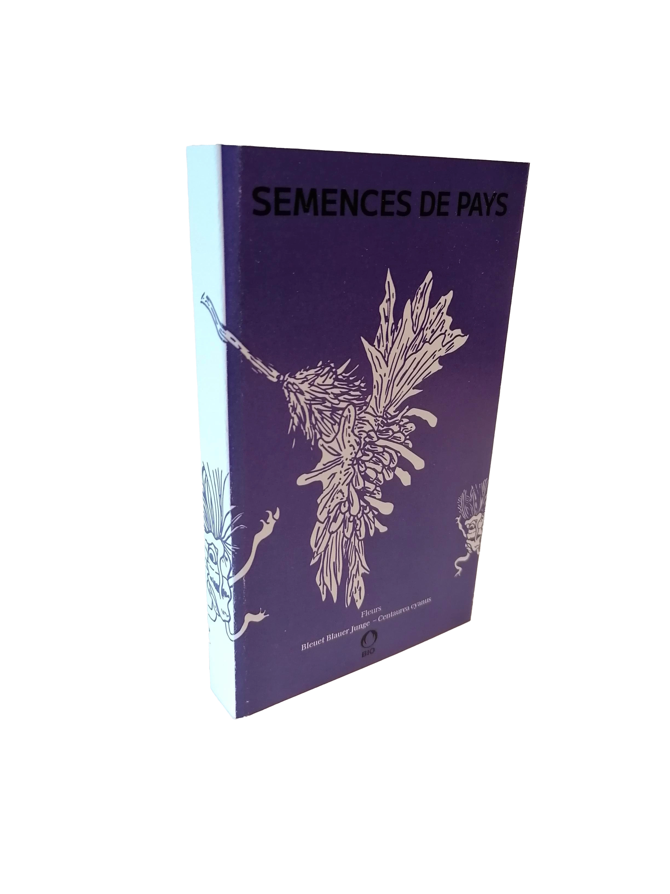

Semences de pays développe une production de semences reproductibles, rustiques et adaptées à une agriculture biologique proche des cycles de la nature, en collaboration avec les initiatives nourricières de proximité.
Nos semences
Potimarron
français

Cucurbitacées
Potimarron français – Cucurbita maxima
Potimarron orange en forme de toupie au caractéristique goût de châtaigne. Le plus ancien potimarron débarqué sur le continent.
Semis: d'avril à mai
Récolte:avant le premier gel
Distance: 100 x100 cm
Haricot
à rames Borlotto

Fabacées
Haricot à rames Borlotto – Phaseolus vulgaris
Cette variété traditionnelle italienne de haricots à écosser aux gousses zébrées de rouge donne une belle récolte de graines de plusieurs couleurs.
Semis: de mai à juillet
Distance: tout les 60 cm, disposer 6 à 8 graines en cercle
Profondeur: 2 cm
Bleuet
Blauer Junge

Fleurs
Bleuet Blauer Junge – Centaurea cyanus
Les délicats pétales de cette magnifique fleur des champs s'emploient pour embellir vos salades d'été et, séchés, dans des mélanges de tisanes.
Semis: de mars à septembre
Floraison: de juin à août
Découvrez nos trésors de biodiversité sur le
shop!
Chez Mamie
Rue des Rois 17
1204 Genève
voir
Le Topinambour
Avenue William-Fraisse 9
1006 Lausanne
voir
Ferme du Joran
Chemin des Philosophes 15
1350 Orbe
voir
Le Grainier
Route des Mines de Sel
1880 Bex
voir
Nouvelle Terre
Rue du Grand-Verger 12
1920 Martigny
voir